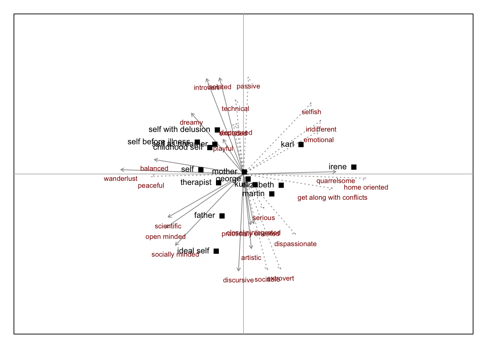
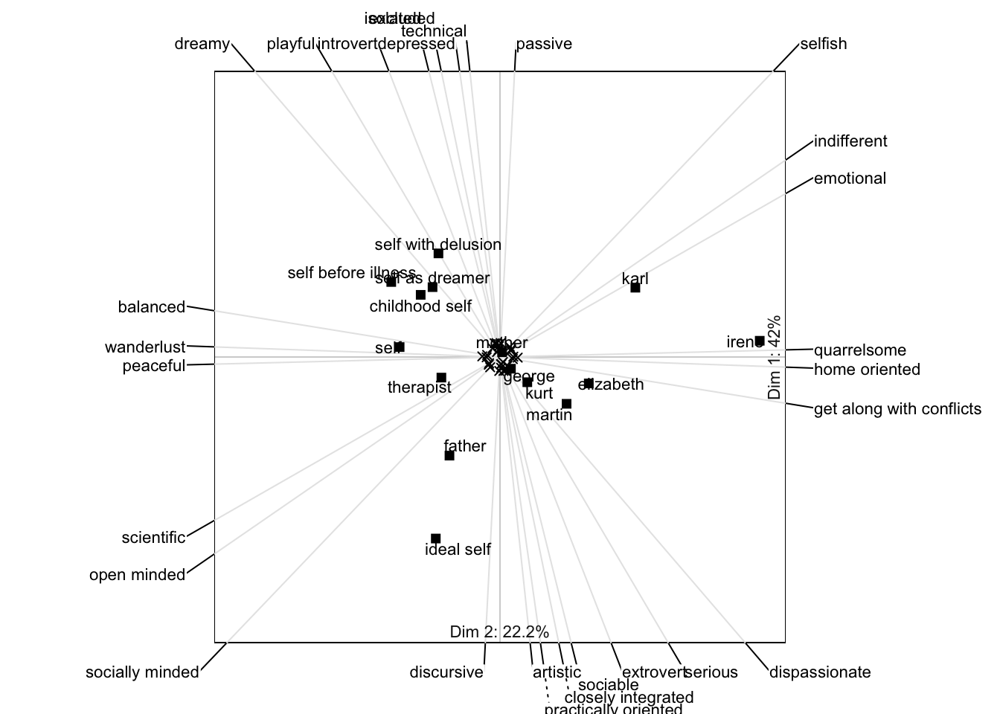
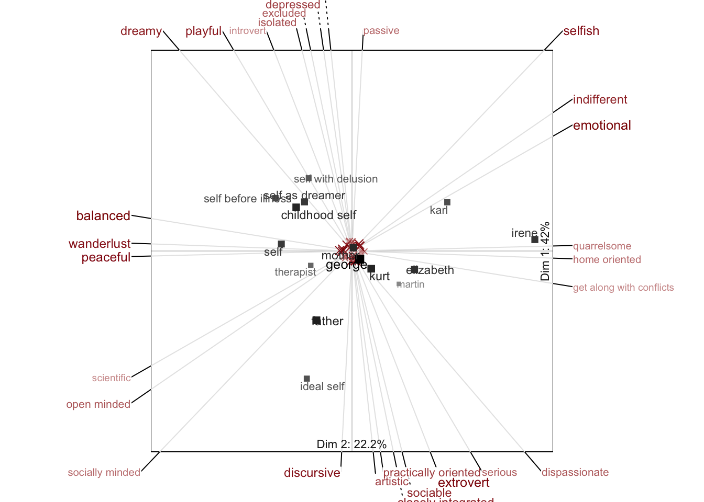
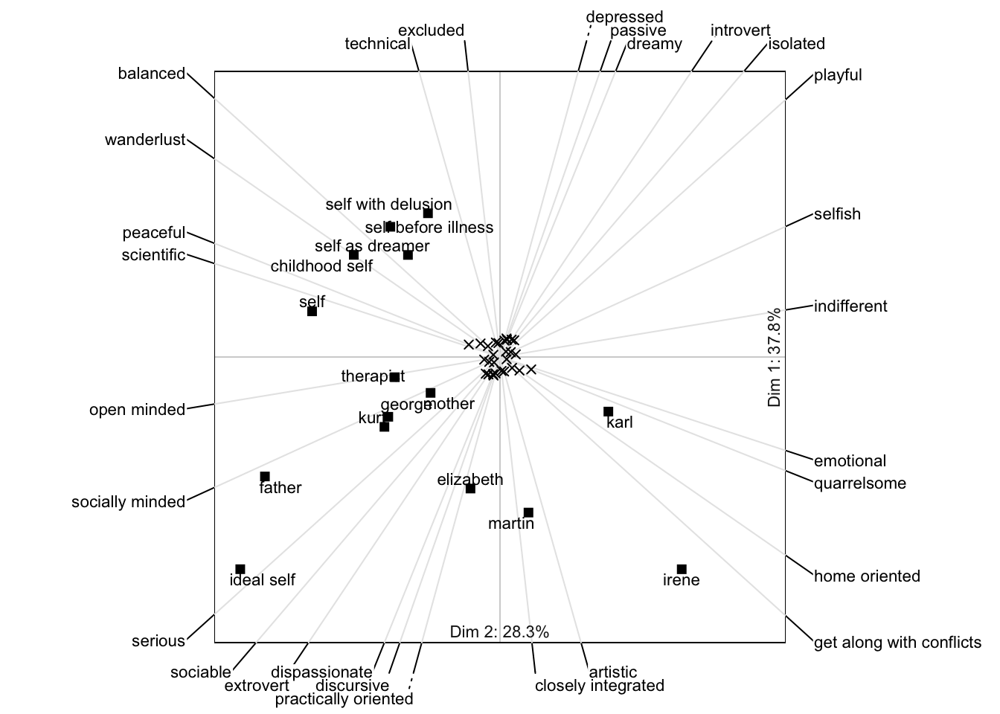
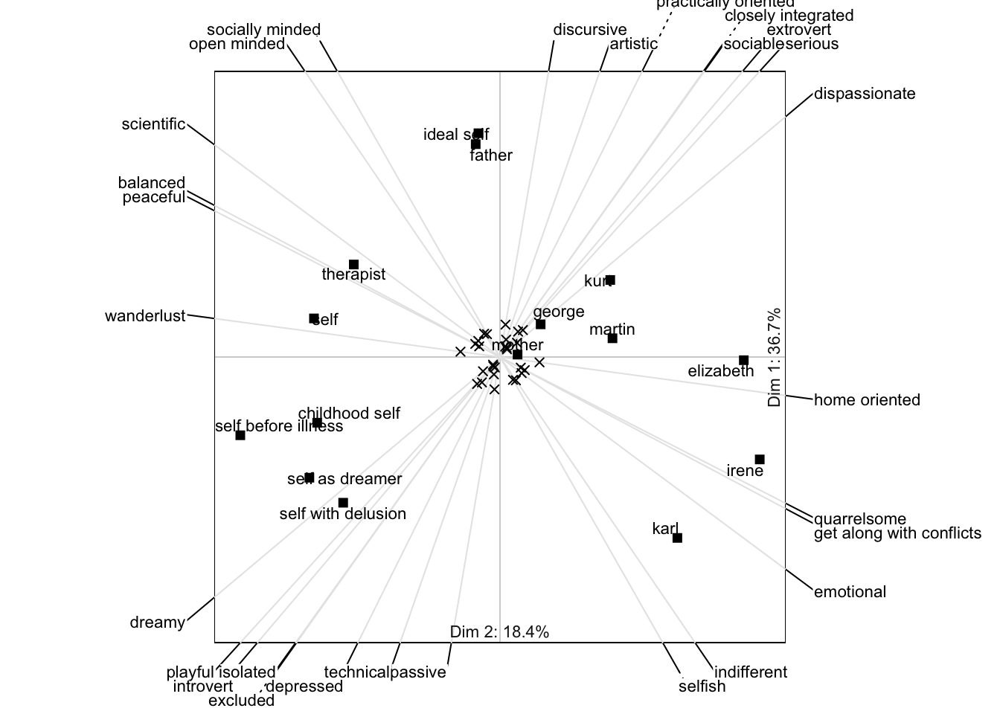

Biplots
Description
One of the most appealing features in the analysis of repertory grids is the joint spatial representation of elements and constructs, i. e. row and column points, in a single plot. These plots visualize inter-construct, inter-element and element-construct relations. They can be a helpful tool as they allow insights into the interviewee’s world, support the formulation of clinical hypotheses or and foster the client-therapist interaction.
The first composite plot of repertory grids was introduced by Slater (1964) in his INGRID program. Since its introduction, the INGRID composite plot has become a standard feature of contemporary grid software (e. g. Fransella, Bell & Bannister, 2003).
In contemporary research literature, the joint spatial representation of two different aspects of a data matrix in one composite plot is often treated within the biplot framework (cf. Gower, Lubbe, Gardner, & Roux, 2011; Greenacre, 2010). This framework comprises representations based on different multivariate techniques such as PCA, MDS, CA etc. These techniques differ with regard to several aspects (e.g. pre-treatment of the data, distance model) and yield spatial representations focusing on different aspects of the data. The central idea of a joint spatial representation, i.e. a biplot, is to render a visual representation (usually in two or three dimensions) that optimally displays central features inherent in the data (e.g. correlations between variables, distances between points). As the data represented usually has a dimensionality higher than two or three (i.e. the rank of its data matrix) the problem arises of how to optimally represent the data within a space of lower dimensionality. Hence, the visual representation requires a dimensionality reduction that is usually achieved by a factorization of the data matrix called singular value decomposition (SVD). As the biplot representation is central to grid representation, its rationale will be briefly outlined.
Biplot functions
In OpenRepGrid a number of functions have been implemented to produce different types of biplots. The following are the most important ones:
biplotSimplebiplot2dbiplotPeudo3dbiplot3d
All of these functions allow to change a lot of their settings. To see the whole list of available arguments type ? followed by the function name.
biplotSimple
biplotSimple is a graphically unsophisticated version of a biplot. It will draw elements and constructs vectors using similar arguments as biplot2d. It is a version for quick exploration used during development. The colors of the constructs has been set to darkred to make it easier to differentiate between constructs and element labels.
biplotSimple(boeker, c.label.col="darkred")
biplot2d
Draws a two-dimensional biplot with a more sophisticated look. Depending on the parameters chosen it contains information on the distances between elements and constructs. Also the relative values the elements have on a construct can be read off by projetion the element onto the construct vector. A lot of parameters can be changed rendering different types of biplots (ESA, Slater’s) and different looks (colors, text size).
biplot2d(boeker)
biplotPseudo3d
Draws a biplot of the grid in 2D with depth impression (pseudo 3D). This version is basically a 2D biplot. It only modifies the color and size of the symbols in order to create a 3D impression of the data points. Lighter and smaller labels are more to the back, darker and bigger labels more to the front. This function will call the standard biplot2d function with some modified arguments. For the whole set of arguments that can be used see ?biplot2d.
biplotPseudo3d(boeker)
biplot3d
Renders an interactive 3D biplot. You will only see the interactive 3D plot below if your browser supports WebGL (like e.g. Google Chrome).
biplot3d(boeker)You must enable Javascript to view this page properly.
Pre-transformations
When representing grid data a decision has to be made whether to apply pre-transformations to the data before submitting it to the SVD. These transformations include the centering and the normalization of the data. In the INGRID procedure (Slater, 1977) the centering of the constructs, i.e. removing the mean value of each row, is used as a default option. Other theorists argue that “double-centering” (i.e. by row and column means) (e.g. Hope, 1966) or that midpoint centering is appropriate to analyze grid data (Raeithel, 1998). The question if or not and which kind of pre-treatment is to be applied has no definite answer and will not be followed here. Note however that different options in pre-treatment results in different spatial representations. Hence, the researcher has to be aware of the influence the pre-treatment exerts onto the spatial representation.
In OpenRepGrid different options for centering and normalization (also called scaling) are included. The centering option for rows and columns of a matrix in yields four possible combinations: 1) construct centering, 2) element centering, 3) double-centering and 4) construct midpoint centering. The last option is also denoted “double-centering” of a grid. For normalization three options can be chosen: 0) no normalization, 1) normalization of constructs and 2) normalization of elements. A simultaneous normalization of rows and columns is not possible.
If the output is affected by pre-scaling the corresponding function in OpenRepGrid offers an argument to specify the form of pre-scaling to be used. The following figures demonstrate how different forms of pre-scaling lead to different representation.
biplot2d(boeker, center=1, normalize=0)
biplot2d(boeker, center=2, normalize=0)
biplot2d(boeker, center=1, normalize=2)
Standard biplot types
The type of biplot that is produced depends on the way the singular values are assigned to the elements and constructs matrices (see calculation of a biplot). Two parameters steer the assignment: \(g\) and \(h\). Depending on the choice of these parameters and the form of pre-transformations used, different types of biplots are plotted. The following three biplots represent the three most important ones.
Element metric preserving biplot
The standard biplot function preserves the distances between the elements, i.e. a form biplot.
biplot2d(boeker)
biplotPseudo3d(boeker)
biplot3d(boeker)Slater’s INGRID biplot
The first version of a joint spatial representation of elements and constructs has become known as Slater’s INGRID biplot. The default is to use row centering and no normalization. Note that Slater’s biplot is just a special case of a biplot that can be produced using the biplot2d function with the arguments center=1, g=1, h=1. The arguments that can be used in this function are the same as in biplot2d.
biplotSlater2d(boeker)
biplot2d(boeker, center=1, g=1, h=1) # compare to previous plot
biplotSlaterPseudo3d(boeker)
biplotSlater3d(boeker)Eigenstructure analysis (ESA) biplot
The ESA is a special type of biplot suggested by Raeithel (e.g. 1998). It uses midpoint centering as a default. Note that the eigenstructure analysis is just a special case of a biplot that can also be produced using the biplot2d function with the arguments center=4, g=1, h=1.
biplotEsa2d(boeker)
biplot2d(boeker, center=1, g=1, h=1) # compare to previous plot
biplotEsaPseudo3d(boeker)
biplotEsa3d(boeker)Changing the appearance
A lot of arguments affecting the appearance of the biplot can be changed. For a full list see biplot2d. The following codes correspond to the figures in the gallery below. It gives an impression of what can be changed in biplot2d. Most arguments also apply to the other biplot functions (see above).
biplot2d(boeker, e.label.col="red", c.label.col="blue") # plot1: change label colors
biplot2d(boeker, e.point.col="red", c.point.col="blue") # plot2: change symbol colors
biplot2d(boeker, e.label.cex=1, c.label.cex=.5) # plot3: change label size
biplot2d(boeker, e.point.cex=1.5, c.point.cex=.5) # plot4 :change symbol size
biplot2d(boeker, zoom=.5) # plot5: zoom out
biplot2d(boeker, zoom=2.5) # plot6: zoom in
biplot2d(boeker, unity=T) # plot7: scale construct & element vectors to equal length
biplot2d(boeker, unity=T, scale.e=.5) # plot8: scaling factor for element vectors
biplot2d(boeker, e.labels.show=F) # plot9: do not show element labels
biplot2d(boeker, e.labels.show=c(1,2,4)) # plot10: show labels for elements 1, 2 and 4
biplot2d(boeker, e.points.show=c(1,2,4)) # plot11: only show elements 1, 2 and 4
biplot2d(boeker, c.labels.show=1:4) # plot12: show constructs labels 1 to 4
biplot2d(boeker, g=1, h=1, c.labels.inside=T, # plot13: different margins and element color
mai=c(0,0,0,0), e.label.col="blue")
biplot2d(boeker, flipaxes=c(T, F)) # plot14: flip x axis
biplot2d(boeker, outer.positioning=F) # plot15: no positioning of construct labels
biplot2d(boeker, c.labels.devangle=20) # plot16: only show constructs within 20 degree angle from xy planeCalculation of biplots
The central concept is to factorize the data matrix \(X\) into two matrices \(G\) and \(H\) such that
\[ X = GH^T.\]
Hence, the scalar product between a row vector of \(G\) and a column vector of \(H\) will reproduce the original cell value of a matrix. The scalar product has a geometrical interpretation as the projection of one vector onto the other. As the data matrix \(X\) usually has a rank higher than two, a representation in two (or three) dimensions requires to find an optimal representation within a lower dimensional space. To find a low dimension representation the singular value decomposition is applied. It factorizes \(X\) into three matrices: \(U\) containing the row vectors, \(V\) the column points and \(D\) the singular values (root of eigenvalues) of the new principal axes.
\[ X = UDV^T \]
Eckart and Young (1936) showed that the SVD has the property to yield the best lower rank approximation of \(X\) based on. Hence, a lower dimensional representation (e.g. in two dimensions) that is optimal in a least-square sense can be written as
\[ X_{[2]} = U_{[2]} D_{[2]} V_{[2]}^T \]
This representation almost already has the form required for a biplot representation. The decision to take is how to assign the singular values to the left and right matrices.
\[ X = UD^g D^h V^T X = GH^T \]
In the standard biplot \(g=0\) and \(h=1\). This yields a so called form biplot, as the metric of the elements is preserved. Several other standard representations can be expressed in terms of the parameters \(g\), \(h\) and the pre-transformations (centering, normalization) applied to \(X\).
Literature
- Fransella, F., Bell, R. C., & Bannister, D. (2003). A Manual for Repertory Grid Technique (2. ed.). Chichester: John Wiley & Sons.
- Gower, J., Lubbe, S. G., Gardner, S., & Roux, N. L. (2011). Understanding Biplots. John Wiley and Sons.
- Greenacre, M. (2010). Biplots in practice. Madrid: BBVA Foundation. Retrieved from http://www.multivariatestatistics.org/biplots.html
- Hope, K. (1966). Cos and Cosmos: Considerations on Patrick Slater’s Monograph The Principal Components of a Repertory Grid. British Journal of Psychiatry, 66(112), 1155 - 1163.
- Raeithel, A. (1998). Kooperative Modellproduktion von Professionellen und Klienten – erläutert am Beispiel des Repertory Grid. In Selbstorganisation, Kooperation, Zeichenprozeß : Arbeiten zu einer kulturwissenschaftlichen, anwendungsbezogenen Psychologie (pp. 209-254). Opladen: Westdeutscher Verlag.
- Slater, P. (1964). The Principal Components of a Repertory. London: Vincent Andrews & Co.
- Slater, P. (1977). The measurement of intrapersonal space by Grid technique. London: Wiley.